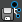

必须创建自定义绑定映射，以便于角色从 MotionBuilder 或 Maya 中的本地 HumanIK 角色中获取动画流的源。
创建新的自定义绑定映射的步骤
- 在 Maya 中，通过自定义绑定加载或创建角色。
- 在“定义”(Definition)选项卡中定义骨架。（请参见定义现有骨架。）
注： 有效的骨架定义需要创建自定义绑定映射。如果在不具有有效骨架定义的情况下尝试映射自定义绑定，则系统将显示警告消息。
- 执行以下操作之一以创建新的自定义绑定映射：
- 选择
 >“定义 > 自定义绑定”(Define > Custom Rig)。
>“定义 > 自定义绑定”(Define > Custom Rig)。
- 从“定义”(Definition)选项卡工具栏中选择
 。
。
- 选择
- 从您的自定义绑定转至“自定义绑定”(Custom Rig)选项卡以映射绑定的结构：选择其中一个自定义绑定控制器，然后右键单击“自定义绑定”(Custom Rig)选项卡中的相应单元并从显示的菜单中选择“指定选定的效应器”(Assign Selected Effector)。定义了某单元后，它将变为绿色，以指示其已被映射。
默认情况下，IK 效应器映射平移和旋转，而 FK 效应器只映射旋转。
- 要针对膝部和肘部映射上方向向量效应器（仅平移），请在“角色”(Character)表示中选择相应单元，然后完成以下步骤：
- 在“映射控件”(Mapping Controls)中选择“贴图平移”(Map Translations)。
- 在“映射控件”(Mapping Controls)中取消选择“贴图旋转”(Map Rotations)。
- 将“平移 X 偏移”(Translation X Offset)、“平移 Y 偏移”(Translation Y Offset)和“平移 Z 偏移”(Translation Z Offset)设置为零。
- 使用“映射控件”(Mapping Controls)调整自定义绑定效应器和骨架关节之间的偏移。
- 创建自定义绑定映射以后，您可以通过单击“保存自定义绑定映射”(Save Custom Rig Mapping)图标  对其进行保存。
您的自定义绑定映射存储在一个 XML 文件中，可以使用“加载自定义绑定映射”(Load Custom Rig Mapping)图标 加载该文件，以便于以后重复使用。通过保存自定义绑定映射，您可以为自定义绑定创建模板。
与场景一起保存自定义绑定映射的步骤
- 保存场景。
- 重新启动 Maya 或选择“文件 > 新建”(File > New)。
- 选择“文件 > 打开”(File > Open)，然后导航至保存的场景。
您的角色将加载，并且其自定义绑定映射仍然正确应用。